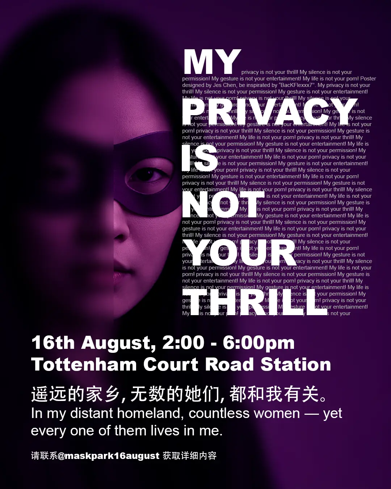
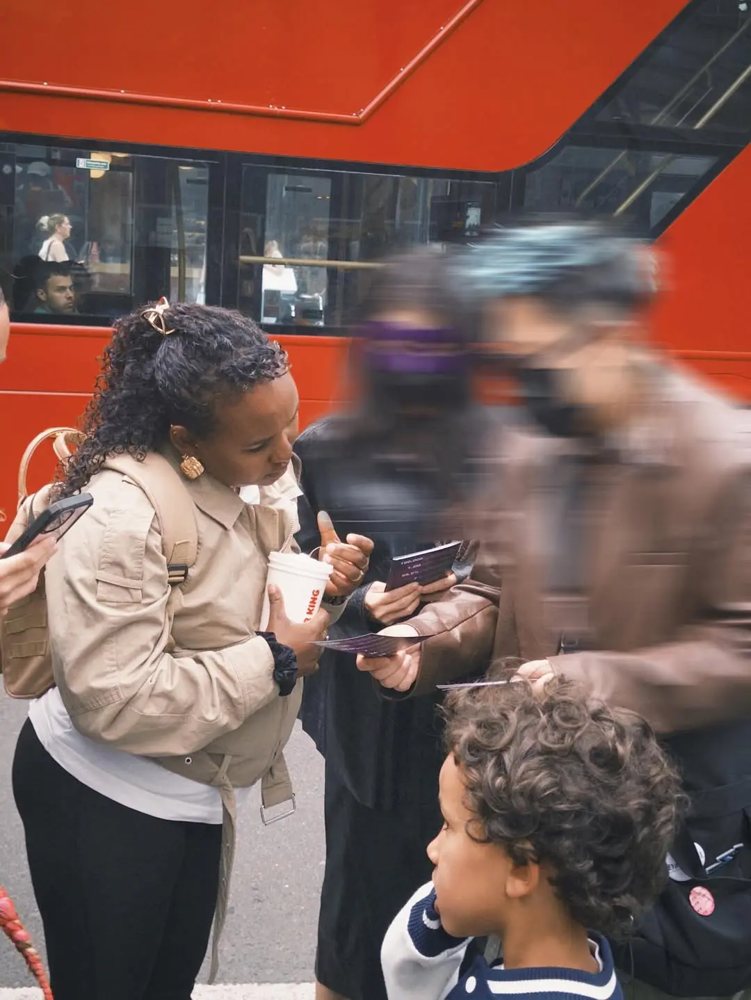
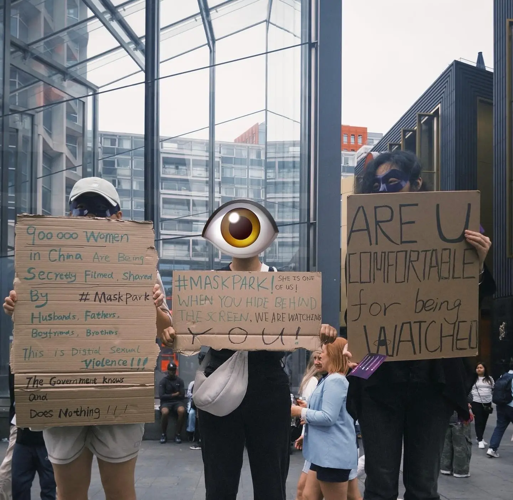
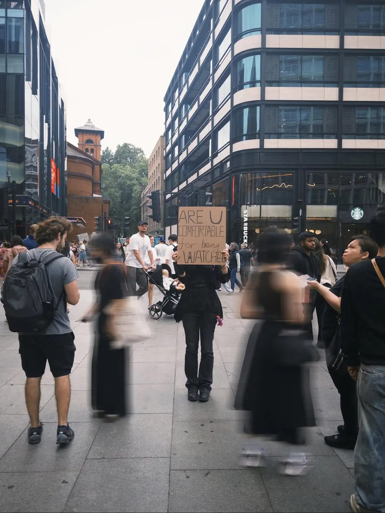
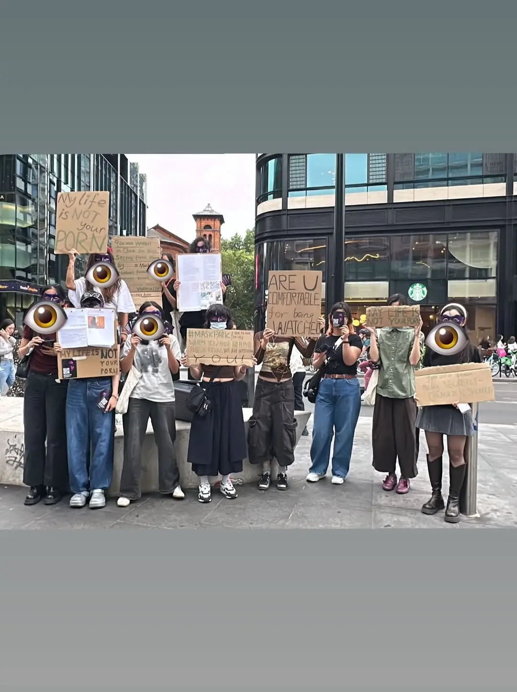

MaskPark took place on 16 August 2025 at Tottenham Court Road Station in central London. The action responded to the public exposure of MaskPark, an anonymous online group operating across encrypted platforms, in which hundreds of thousands of users were found to be circulating hidden-camera footage and stolen intimate imagery of women — including, in many cases, their own family members. The scale of the network, the absence of meaningful legal response, and the displacement of fear onto the women depicted formed the conditions the action set out to address.
Participants assembled in matching purple masks and moved through the pedestrian areas surrounding the station over the course of four hours. The action operated through presence and silence rather than amplification: no sound systems, no speeches, no confrontation. Participants distributed A6 flyers and engaged passers-by in brief, polite conversation, inviting them to learn more and to register support through an anonymous online platform. The masks functioned both as a unifying visual signature and as a protective measure for participants, many of whom were members of overseas Chinese-speaking communities for whom visibility carried real risk.
The action concluded with participants gathering in the square to speak the four lines that had circulated across the campaign's printed and online material:
My life is not your porn.
My privacy is not your thrill.
My silence is not your permission.
My gesture is not your entertainment.
MaskPark was organised by OMMFA as a public artistic action. It exists in continuity with an ongoing online platform at maskpark.info, where members of the public can continue to register their position anonymously and where documentation of the action is maintained.



